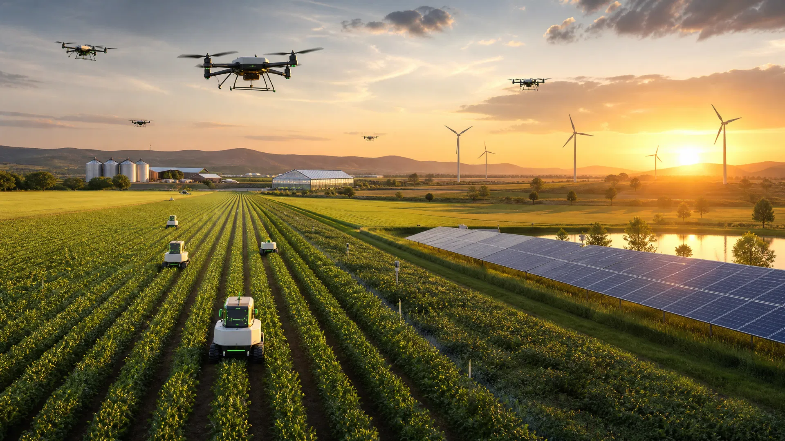
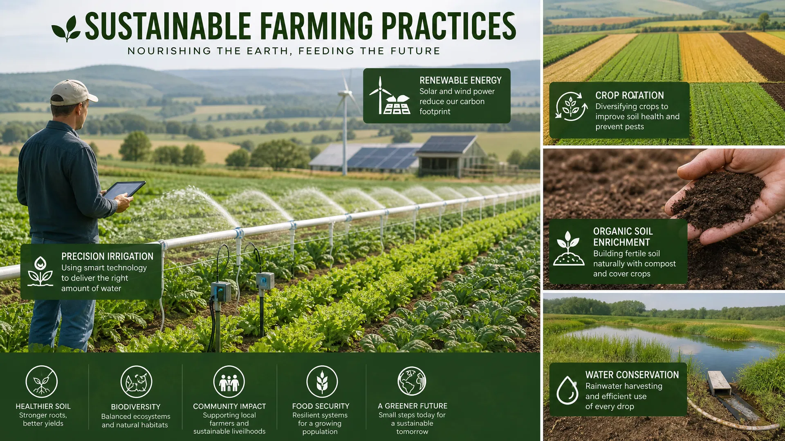
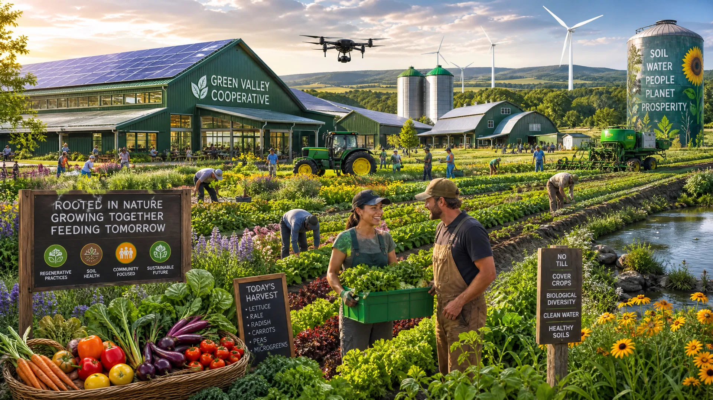

Drones Agrícolas
Monitoramento aéreo de plantações em tempo real

Produzir com responsabilidade é garantir alimento, inovação e preservação para as futuras gerações.
Entenda a importância de equilibrar produção agrícola com preservação ambiental
O agronegócio é fundamental para a economia brasileira, gerando empregos, renda e alimentos. Porém, sua expansão deve ser equilibrada com a preservação ambiental. A sustentabilidade no agro não é apenas uma responsabilidade ambiental, mas também uma oportunidade de negócio que garante a viabilidade econômica das propriedades rurais a longo prazo.
Desmatamento, uso excessivo de água e emissão de carbono são desafios críticos. Precisamos de soluções inovadoras que conciliem produção com sustentabilidade. A degradação do solo, a perda de biodiversidade e as mudanças climáticas ameaçam a produtividade agrícola global. Enfrentar esses desafios requer comprometimento com práticas responsáveis.
Rotação de culturas, agricultura de precisão e energia renovável são práticas que aumentam a produtividade enquanto preservam o meio ambiente. Tecnologias como drones, sensores inteligentes e inteligência artificial permitem otimizar o uso de recursos, reduzindo desperdícios e impactos ambientais.
Monitoramento aéreo de plantações em tempo real
Coleta de dados em tempo real do solo e clima
Uso eficiente de água com sistemas inteligentes
Previsões e otimizações baseadas em dados
Equipamentos de baixo impacto ambiental
Painéis solares e turbinas eólicas no campo

Práticas de manejo que mantêm a fertilidade natural
↑ 45% produtividadeControle biológico e manejo integrado de pragas
↓ 60% resíduosRestauração de áreas degradadas com espécies nativas
↑ 80% biodiversidadeSistemas de irrigação eficientes e reuso de água
↓ 50% consumoAproveitamento de resíduos como insumos
↓ 70% desperdícioImplementação de agricultura regenerativa aumentou produção em 40%
📍 Mato GrossoUso de energia solar reduziu custos operacionais em 35%
📍 São PauloDrones e IA otimizaram irrigação economizando 50% de água
📍 Paraná

Junte-se a nós na construção de um futuro agrícola mais sustentável